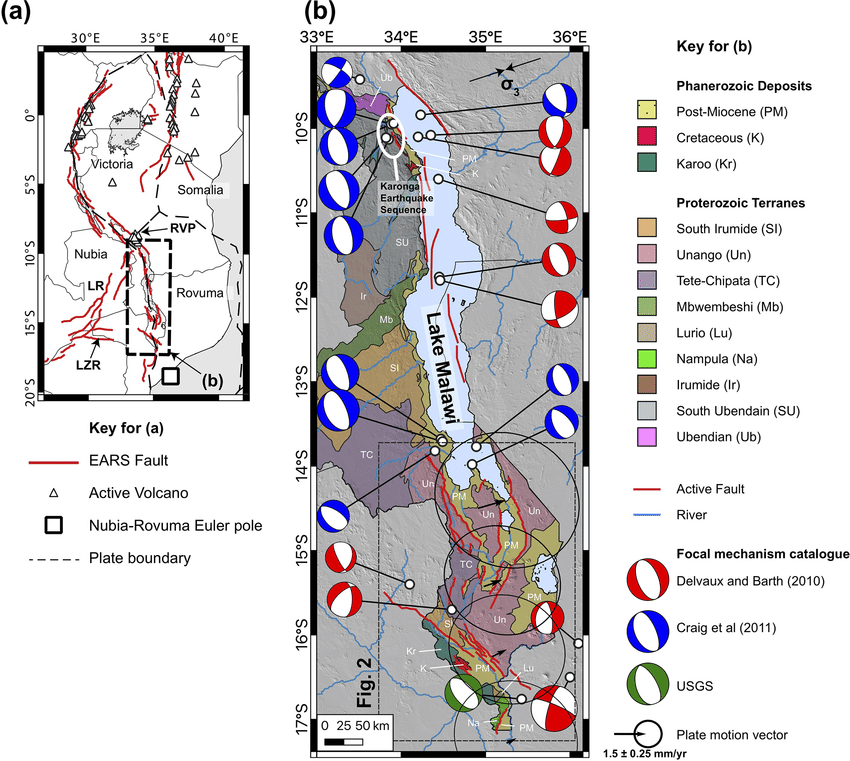

I am a first born son and the only child in my family.
I was born at kambenje village, Tradition Authority Nkanda in Mulanje
District.
I am a SEISMOLOGY ANALYST working with
Geological Survey Department in the Ministry of Mining since 2009.
My duties involve analysing seismic data using computer software,
developing earthquake database of Malawi, developing mineral occurrence
database of Malawi, informing government about earthquakes, conducting geotechnical
studies.
Currently, I am studying ICT Diploma program at Mzuzu University
In my work experience, I have been involved in some projects and one of them is the
mapping of active faults in Malawi. This project involved computer based
desk work, literature reviews and field work. At the end of the project
we produced a paper and posters.